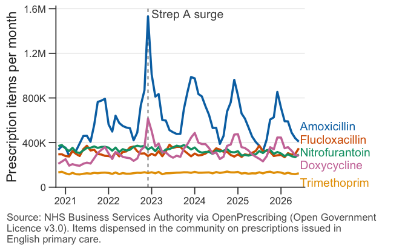
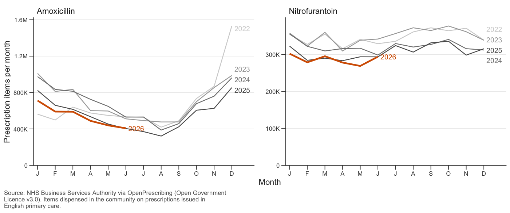

opamr retrieves English primary-care antibiotic prescribing data from OpenPrescribing, translates between the vocabularies used in prescribing and resistance data (BNF codes, ATC codes, AMR package codes and drug names), and draws publication-quality ggplot2 figures.
| Crosswalk |
ab_to_bnf(), bnf_to_ab(), atc_to_bnf(), bnf_to_atc(), op_antibiotics(), bnf_class(). Uses a bundled table of 121 BNF chemicals and works offline. |
| Data |
op_spending() and op_spending_ab() (monthly items, quantity and cost nationally or by Sub-ICB Location, ICB, PCN or practice); op_org_details(), op_rate() and op_antibiotic_use() (list-size and STAR-PU rates); op_bnf_search() and op_org_search()
|
| Figures |
op_plot_trend(), op_plot_seasonal(), op_plot_distribution(), op_plot_heatmap(), theme_op(), op_save()
|
Installation
# install.packages("remotes")
remotes::install_github("OWNER/opamr")AMR is optional. It lets free-text names, brand names and misspellings be resolved.
Example
library(opamr)
# antimicrobial names, AMR codes and ATC codes -> BNF chemical codes
ab_to_bnf(c("co-amoxiclav", "NIT", "J01AA02"), use_amr = FALSE)[, c("input", "ab", "atc", "bnf_chemical_code")]
#> input ab atc bnf_chemical_code
#> 1 co-amoxiclav AMC J01CR02 0501013K0
#> 2 NIT NIT J01XE01 0501130R0
#> 3 J01AA02 DOX J01AA02 0501030I0
#> 4 J01AA02 DOX J01AA02 0501030Z0
# a whole class by ATC prefix
ab_to_bnf("J01MA", output = "codes")
#> [1] "0501120L0" "0501120P0" "0501120Q0" "0501120X0" "0501120Y0"
# any BNF code (here a 15-character presentation) -> antimicrobial
bnf_to_ab("0501013B0AAAAAA")[, c("input", "ab", "ab_name", "atc")]
#> input ab ab_name atc
#> 1 0501013B0AAAAAA AMX Amoxicillin J01CA04Download prescribing (needs network access):
use <- op_spending_ab(c("amoxicillin", "nitrofurantoin", "doxycycline")) # England, monthly
rate <- op_antibiotic_use("amoxicillin", org_type = "sicbl",
denominator = "star_pu.oral_antibacterial_items") # every Sub-ICB LocationFigures from the bundled national example data:
top <- op_example[op_example$ab_name %in% c("Amoxicillin", "Doxycycline", "Nitrofurantoin",
"Flucloxacillin", "Trimethoprim"), ]
op_plot_trend(top, y = "items", events = data.frame(date = "2022-12-01", label = "Strep A surge"))
op_plot_seasonal(top[top$ab %in% c("AMX", "NIT"), ], y = "items", years = 2022:2026)
p <- op_plot_trend(top, y = "items")
op_save(p, "figure1.pdf", width = "single") # 85 mm; "onehalf" 120 mm; "double" 178 mmData and limitations
- What the data cover. Prescription items dispensed in the community on prescriptions issued in English primary care. Data are monthly, with a lag of about two months. Hospital inpatient use is not included. There are no indications, doses or patient identifiers.
- Licence and citation. The data are published by the NHS Business Services Authority under the Open Government Licence v3.0, and served by OpenPrescribing (Bennett Institute for Applied Data Science, University of Oxford). Cite both.
-
How
antibiotic_crosswalkwas built. BNF chemical names from the English Prescribing Dataset were matched toAMRcodes withAMR::as.ab(). Matches were filtered to reject false positives, and a reviewed override table was applied. Chemicals not dispensed in the community during the build months are absent. Antivirals and antiparasitics are out of scope.data-raw/build_crosswalk.Rrebuilds the table. -
Where
op_examplecomes from. National monthly totals for BNF section 5.1, aggregated from the English Prescribing Dataset (data-raw/build_example.R). They were not downloaded through the API. -
Testing of the API functions. They are tested against mocked responses with the structure used in the OpenPrescribing server source. Live-API tests exist but are off by default: set
OPAMR_LIVE_TESTS=trueto run them. OpenPrescribing sits behind bot protection, which rejects some automated clients. If you see an “HTML page” error, see?op_check_api.